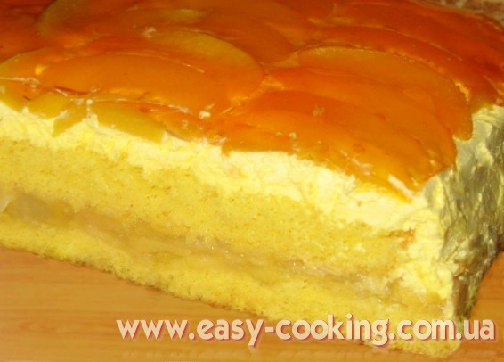
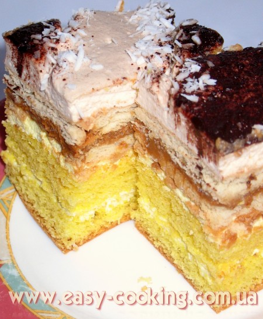

Пляцки
Рецепти пляцків. Пляцки – то така смачна випічка, традиційна для Західної України. Це щось середнє між тістечком і тортом. Переважно пляцком називається випічка, яка випікається у великій квадратній бритванці (формі для випічки), а потім нарізається на невеликі квадратні шматочки-тістечка.
Пляцки бувають багатошарові, а й навіть одношарові – як кекс. З різноманітними комбінаціями кремів, начинок, різних-прерізних коржів, вафель. Останнім часом популярно додавати всередину пляцка шматочки зефіру, трубочки, мармелад – як один з шарів або ж у крем.
Я збираю різні рецепти пляцків – скрізь, де тільки можна, щоб і Ви (і я також ;)) мали доступ до цікавих традиційних рецептів випічки Західної України.
Пляцок “Сонечко”

Цей пляцок пече моя свекруха. Зверху він покривається шаром персиків, залитих галяреткою, що надає йому надзвичайно гарного вигляду. Всередині іде легка яблучна начинка.
Читати далі
Пляцок “Крувка” (“Корівка”)

Цей пляцок – один з моїх найулюбленіших, які пече моя свекруха. Випічка такого типу (маю на увазі з печивом, вареною згущенкою та суфле) є дуже популярною у Польщі, а ми активно перебираємо досвід сусідів і заодно розширюємо кордони української кухні
Читати далі
Пляцок шоколадно-кавовий

Для любителів кави і шоколаду — це саме те, що потрібно. Супер-м’які коржі, які завдяки використанню амонію дуже довго залишаються ніжними, ідеально поєднуються з солодким і хрустким горіховим безе та гірчинкою кавового крему.
Читати далі